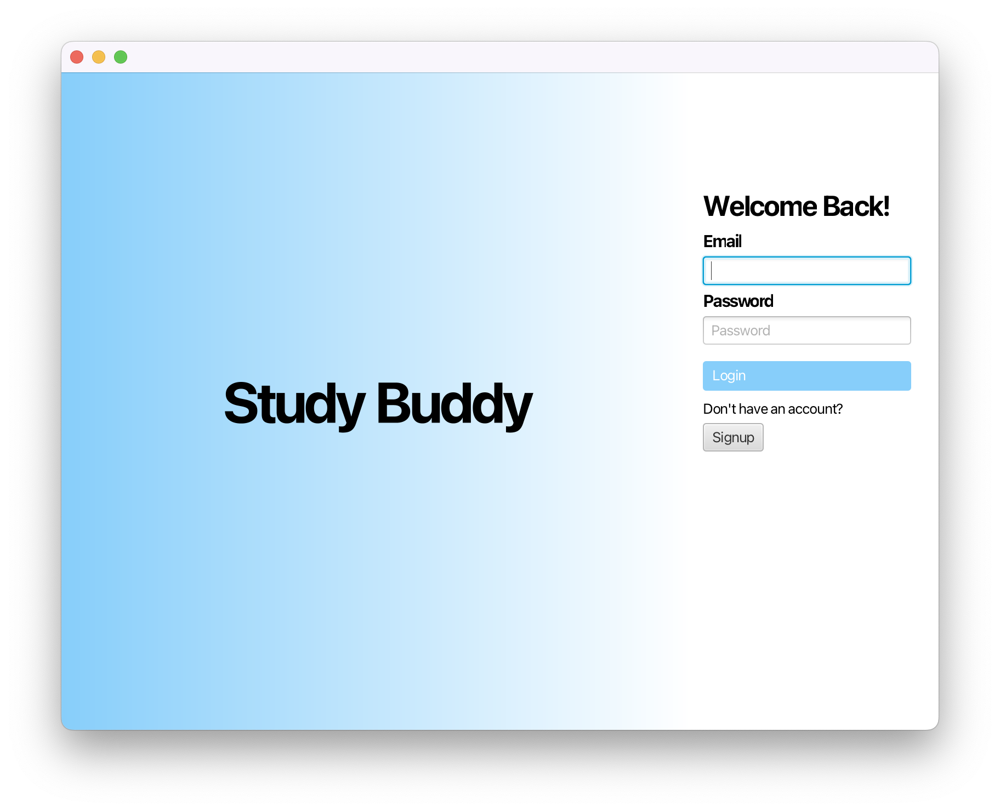
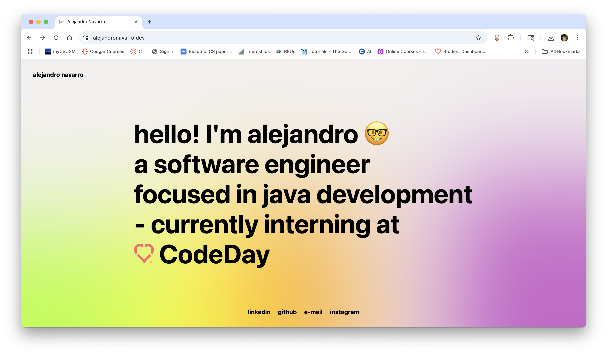

Developing a social media-inspired study app that allows students to connect with classmates, form study groups, and collaborate on coursework. The app includes or will include features such as user profiles, group creation, real-time messaging, and shared resource libraries. I'm using technologies like Java, Spring Boot, and MongoDB to build both the backend and messaging system. This project reflects my interest in building full-stack applications that solve real problems for students like myself.

Built a responsive personal portfolio website to showcase my projects, skills, and experience as a Software Engineering student. This project helped me strengthen my understanding of front-end technologies including HTML, CSS, and JavaScript. I plan to expand on it by integrating TypeScript and exploring deployment options. The website serves as a dynamic platform to demonstrate my growth and future work in software development.
Developed an expressive robot capable of dancing and conveying emotions through synchronized movements and animated LED facial expressions. Leveraged SPI and serial communication on an STM32 Nucleo board to control 8x8 LED matrices representing eyes and mouth, as well as motor functions for movement. Integrated motor control logic in C and manually soldered components and circuitry. Focused on creating responsive, personality-driven robot behaviors like "happy," "mad," and "sad" using motor direction and LED animations.